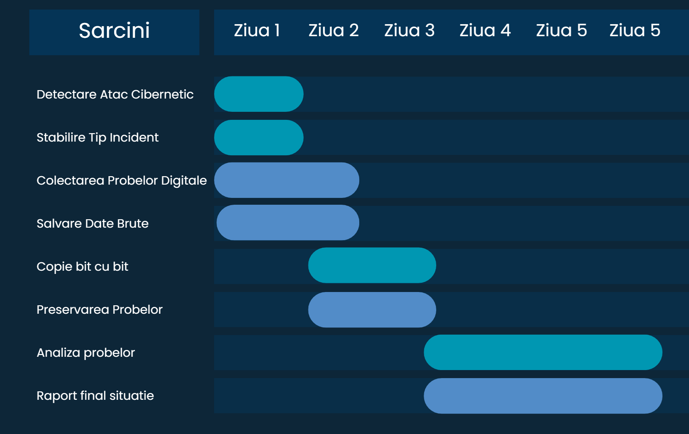

<h1>Gantt - Timeline investigatie</h1>
<link rel="stylesheet" href="style.css">



<h1>Kanban - Progres Proiect</h1>

<div class="kanban">
    <div class="column">
        <h3>To Do</h3>
        <div class="card">Identificarea incidentului</div>
        <div class="card">Colectarea probelor digitale</div>
    </div>

    <div class="column">
        <h3>In Progress</h3>
        <div class="card">Preservarea datelor</div>
        <div class="card">Analiza dispozitivelor</div>
    </div>

    <div class="column">
        <h3>Review</h3>
        <div class="card">Analiza logurilor și artefactelor</div>
        <div class="card">Corelarea probelor</div>
    </div>

    <div class="column">
        <h3>Done</h3>
        <div class="card">Raport final expertiză</div>
        <div class="card">Concluzii</div>
    </div>
</div>
